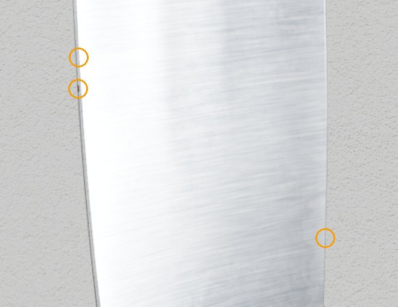
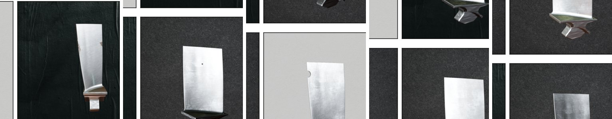
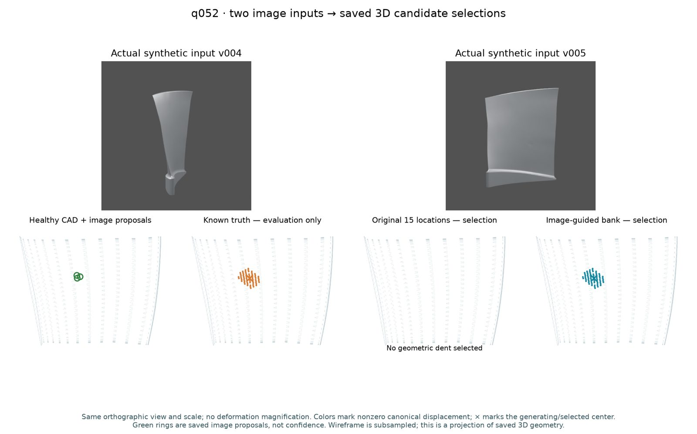
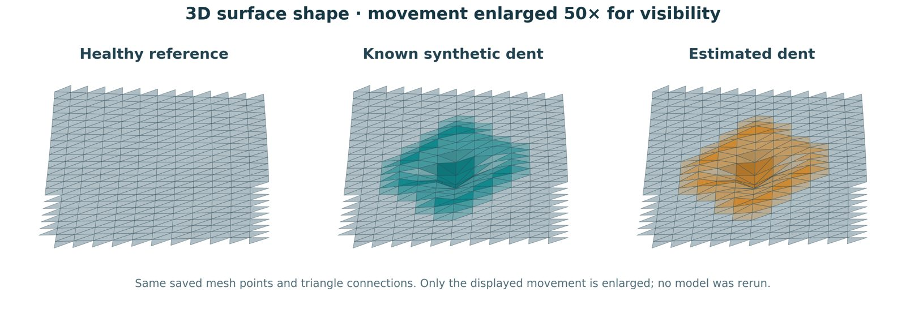
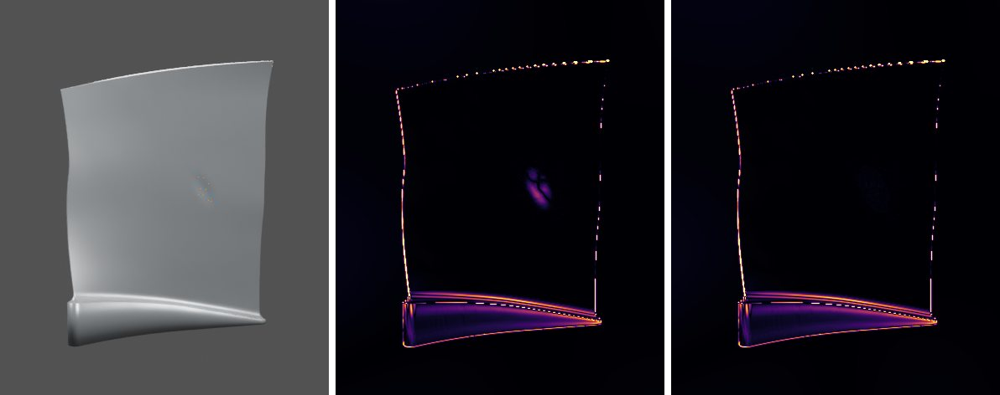
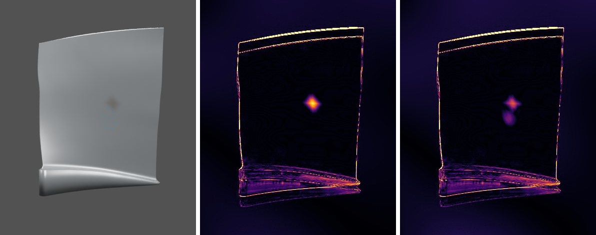
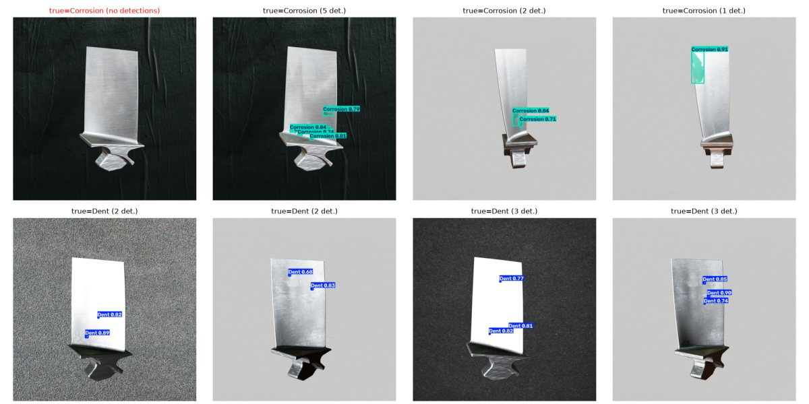
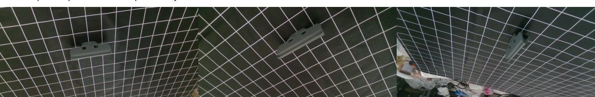
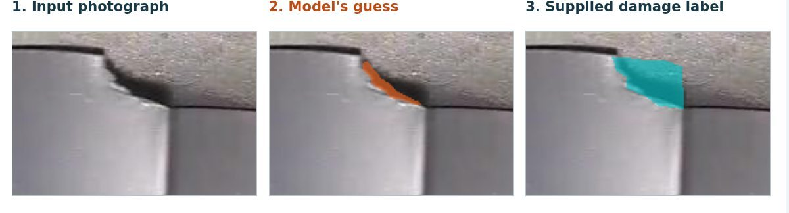
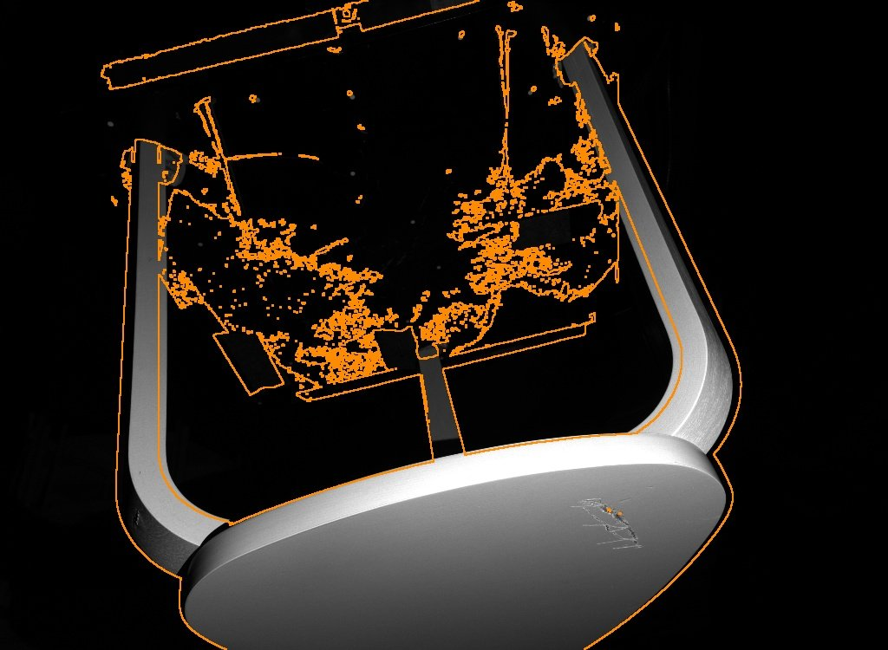

Can photos tell us what is wrong with a jet-engine blade, and where it is in 3D?
Jet engines are inspected by people looking at camera images of the blades inside. Damage can be a few pixels wide. We are building AI that finds that damage, writes a correct report about it, and places it on the blade's 3D shape, while admitting when the pictures are not enough to be sure.
Damage is tiny, and AI reports about it can be confidently wrong
A turbine blade can have four common kinds of damage: a dent (pushed-in metal), a nick (a small chip on the edge), a scratch, and corrosion (rust-like spots). An inspector looks at images and writes a short report: what the damage is, where it is, how bad it is, and whether the blade passes.
Modern "vision-language" AI models can look at an image and write that report automatically. The problem is that they often get it wrong, and they sound just as confident when they do. In our tests, an off-the-shelf model named the damage correctly on only 2% of dented blades and 5% of nicked blades.
The picture on the right shows why. This blade has corrosion, labelled by the dataset at 46 pixels out of more than a million. The AI said "Defect: None, Verdict: PASS".
Our project grew in two steps. First we built a checker that catches and fixes wrong AI reports using evidence from a defect detector. Then we asked a harder question: can the images tell us the actual 3D shape change on the blade, so the report points to a place on the real part rather than a place in a photo?

Words used on this page
- VLM
- Vision-language model. An AI that reads an image and writes text about it. We used Qwen2-VL-7B.
- Segmentation / mask
- Colouring exactly which pixels are damage. A "mask" is that coloured map.
- YOLO
- A fast object detector. Ours (YOLOv8-seg) draws a box and a mask around each defect.
- CAD / mesh
- The blade's digital 3D design. A mesh is that shape stored as points (vertices) joined into triangles.
- IoU
- Overlap between the predicted and true damage area. 100% is perfect, 0% means no overlap.
- AUROC
- How well a score ranks damaged cases above healthy ones. 0.5 is a coin flip; 1.0 is perfect.
- Precision / recall
- Precision: of the things flagged, how many were right. Recall: of the real problems, how many were found.
- PFCS
- Our report score (0 to 1). It combines correct defect type, correct pass/fail, correct location and text similarity.
- Synthetic vs real
- Synthetic images are computer-rendered with known answers. Real images are photographs, where answers must be labelled by people.
- Fit gain
- How much better "dent + nuisance" explains the images than "nuisance only" (camera error, lighting, a stain). Large gain = the images support a dent.
- Dev / calib / test
- Dev: used to build the method. Calib: used only to set the decision threshold. Test: sealed, rendered and scored once at the end.
Five phases, each started by what the last one could not do
Phase 1 · InspectVLM: check and fix AI-written reports
doneA team of AI "agents" reviews each report. One checks the text for contradictions, one compares it with what the YOLO detector actually found, one decides if the report is wrong, and one rewrites it. Scaled from 100 to 500 images, then confirmed on 125 images never used during development.
Why we moved on: every image was a single synthetic picture with no notion of which physical blade or which viewing angle it came from. An independent audit found the required multi-view workflow was missing entirely.
Phase 2 · ClosureGuard / BladeGuard: check reports using several views
redesignEvery claim in a report must be supported by the images, and every defect visible in the images must appear in the report. We built multi-view data contracts, a shortcut-proof benchmark and a canonical-surface method, with 68 then 126 automated tests passing.
Why we moved on: the new method tied a simple "detector + rules" baseline and could not meet its safety target with only 42 clean calibration groups. Recorded verdict: not CVPR-ready, redesign.
Phase 3 · From synthetic images to real photographs
gap foundWe tested synthetic-trained detectors on real aero-engine photos (AeBAD) and trained a model on real labelled photos (AEBIS). We ran 45 training runs across 19 conditions to push real-photo accuracy toward a fixed goal.
Why we moved on: a detector that was near-perfect on synthetic images was close to a coin flip on real ones, and the best real-photo model stopped just short of its 65% IoU goal. Flat 2D masks also cannot say how deep a dent is.
Phase 4 · Main Jet: estimate the 3D damage from images
doneInput: the healthy 3D blade design plus two inspection images. Output: where on the 3D surface the damage is, and the changed 3D shape. Exact recovery on controlled synthetic dents, including fresh locations and a 1° camera error.
Why we moved on: it was a search over a fixed family of dent shapes on two exposed blades. A CVPR paper needs continuous estimation, unseen blades, harder capture changes and an honest "not enough evidence" answer.
Phase 5 · BladeDelta: evidence-bounded 3D damage for CVPR 2027
in progressA new benchmark on 54 fresh Rotor37 blades (30 sealed for testing), a continuous estimator built on a differentiable renderer, and a decision that says "dent supported" only when the images rule out camera error, lighting and stains. Details below.
Six sources, from fully synthetic to real photographs

| Dataset | What it is | Size | Used for | Status |
|---|---|---|---|---|
| BladeSynthScientific Data, 2025 | Computer-rendered blades, 5 classes, with damage masks | 12,505 images12,489 after cleaning | Phase 1 checker, detector training, synthetic tests | used |
| AeBADreal aero-engine blades | Real photos (AeBAD-S) and video frames (AeBAD-V) | 5,570 images4,342 official test kept sealed | Measuring the synthetic-to-real drop | used |
| AEBISreal labelled photos | Real damaged-blade photos with pixel masks | 528 images397 train · 131 dev | Training the real-photo damage model | used |
| Our own photos | Photographs of different physical blades | 174 files43 used for dev | Checking the real model on new blades | unlabelled |
| PLAID Rotor37CC BY-SA 4.0 | Public 3D blade shapes (29,989 vertices each). We add known dents and colour changes, then render images in Blender. | 110 shapes13 exposed · 97 fresh | Phases 4–5: images → 3D damage, with exact ground truth | current |
| RADmulti-view industrial | Multi-view photos of 18 physical objects | 4,047 images | Phase 2 multi-view tests | paused |
Before trusting any number we audited BladeSynth: 16 blank images were removed (this also removed all 5 duplicate pairs), 149 damage images whose masks were too small to trace were excluded, and train/test were kept strictly separate. Real test sets (AeBAD official test, sealed Rotor37 shapes) stay unopened until a method is frozen.
Two pipelines: one checks reports, one recovers 3D damage
Phase 1 · The report checker
We tested it two ways. Track 1: start with correct reports, deliberately plant one of four kinds of error in half of them (swap the defect type, hide the defect, move the location, change pass/fail), and see if the checker catches them without touching the correct half. Track 2: use reports the AI wrote itself, with its natural mistakes.
Defect: Corrosion Location: center (3 sites) Severity: Minor Verdict: FAIL
Defect: None Location: n/a Severity: None Verdict: PASSError type: hide the defect
Defect: None Location: Blade Severity: None Verdict: PASSMissed the error
Defect: Corrosion Location: Center of frame Severity: Moderate Verdict: FAILCaught: YOLO found corrosion at 0.55 confidence, so "None" is ruled out. Severity still off by one level.
Real saved outputs from the 500-image run. The AI grounding verifier itself was fooled here (confidence 100); a fixed rule ("report says None but the detector found something") caught it. Several of our biggest gains came from replacing an unreliable AI judgement with a simple rule like this.
Phase 4 · From two images to a 3D damage estimate

The Phase 4 method is a search over a fixed family of dent shapes. Exact recovery was possible because the test dents came from that same family. Phase 5 replaces it with a continuous estimator tested on dent shapes it was not designed for (see CVPR progress).
What the numbers say
Every number below comes from saved result files in the project. Blue is our method; grey is a baseline. Hover a bar for details.
Phase 1 · Report checker
The checker recovers Dent and Nick because the YOLO detector sees what the language model misses. Track 1 reports follow a strict template, so these are best-case numbers. The 125-image held-out check showed no sign of over-tuning (arbitrator 98.4% precision and recall), but all of it is still synthetic data.
Phase 3 · Synthetic to real
Phase 4 · 3D damage from images
How the 3D method improved, test by test
Each square is one synthetic dent. Blue = correct location and improved 3D shape. All tests use two public Rotor37 blade shapes.
Small capture changes caused false dents (older method)
28 September. Out of 14 healthy or colour-only blades, how many got any 3D movement that is not there (some very small). Red = false change.
The 1 October image-guided method had 0 of 14 false dents under the +1° camera shift, against 14 of 14 here.

A better image match does not always mean a better 3D shape. On unfamiliar dents, the image score preferred a less accurate shape in 8 of 12 depth sweeps. This is the core scientific problem the proposal targets.
What already exists, and what nobody has solved
We reviewed 19 closely related works in three groups (survey dated 17 September, updated with September 2026 preprints). The goal was to find what our idea must not claim as new, and where real gaps remain. Full input/output review.
| Work | Venue | Takes in → gives out | What it means for us |
|---|---|---|---|
| A · Finding damage in RGB images | |||
| BladeSynth | Sci. Data 2025 | Procedural blade defects → images + masks | A synthetic blade dataset alone is not new |
| Beyond Cracks / DefectSynth | 2026 preprint | Synthetic RGB, depth, normals, masks → RGB-only segmentation | Closest to our earlier 2D idea |
| Looking 3D | CVPR 2024 | Photo + reference CAD → anomaly boxes | "Image + healthy CAD" is taken; it outputs boxes, not shape |
| PIAD | CVPR 2025 | Normal views → heatmap robust to pose/light | Pose/light robustness is studied in 2D |
| CMDIAD · RADAR · When Depth Hurts | Inf. Fusion 2026 · ACM MM 2025 · 2026 | Train with 3D, test on RGB only | 3D-at-training helps little or even hurts |
| B · 3D inspection and reconstruction | |||
| CADSplat | Sep 2026 preprint (arXiv 2609.18473) | Sparse posed RGB + CAD → deformation field, Gaussian twin | Closest work. Leaves measurement-quality deformed surfaces to future work |
| CAD-NeRF | 2024 preprint | Few RGB + retrieved CAD → deformed shape, poses | Joint shape/pose fitting exists |
| SiM3D | ICCV 2025 | Multi-view RGB + 3D + CAD → 3D anomaly volume | Multi-view 3D anomaly benchmarks exist (voxels) |
| ModMap | CVPR Findings 2026 | RGB/depth views → 3D anomaly volume | Cross-view fusion exists |
| PASDF | ICCV 2025 | Point cloud → anomaly + repaired shape | Needs a measured 3D scan as input |
| Hybrid CNN 3D localisation | Sensors 2025 | Dual-view RGB + CAD → 3D defect polylines | 3D localisation of defects exists; no depth |
| C · Separating shape, material and uncertainty | |||
| IRON · NeRO | CVPR 2022 · SIGGRAPH 2023 | Images → shape and material separately | Shape/material separation is established |
| Bayes' Rays · OCSplats | CVPR 2024 · ICCV 2025 | Radiance field → spatial uncertainty | Generic uncertainty exists, not for damage claims |
| M²AD · NFAD | 2025 · 2026 preprints | Varied views/light → nuisance-robust anomaly scores | Nuisance suppression exists in 2D |
The gaps we found
| Gap | Evidence |
|---|---|
| G1 · Measured 3D damage from a few photos + CAD. Existing methods give boxes, heatmaps or voxels, or need a 3D scan. | CADSplat §6 leaves it to future work; Looking 3D outputs boxes; PASDF needs point clouds. |
| G2 · Damage vs look-alikes. A dark patch can be a dent, a stain, a lighting change or a 1° camera error. No method reports whether the views actually support a physical change. | Ours: 14/14 false dents from a 1° camera shift (older method); image score preferred a worse 3D shape in 8/12 sweeps. |
| G3 · No benchmark with paired truth. No public set has blade images, healthy CAD, exact damaged meshes, negative controls and capture perturbations together. | Survey; BladeDelta (Phase 5) is our answer. |
| G4 · Synthetic training does not transfer. | Ours: AUROC 0.986 synthetic → 0.606 real photos; mask IoU 0.744 → 0.040. |
| G5 · AI reports are not grounded. Language models miss subtle defects and write confident wrong reports. | Ours: raw VLM 2% Dent, 5% Nick accuracy; fixed to 100% / 99% with detector grounding. |
| G6 · No real validation data. No public set pairs real blade photos with measured 3D damage. | Our 20 September geometry audit; a 3D-printed blade capture is planned. |
Where the work stands
done
- Report checker at 500 + 125 held-out images, 96–98% error detection
- Real-photo damage model (61.9% IoU) and real-vs-synthetic gap measured
- Main Jet 3D: 12/12 fresh locations, 18/18 dents under +1° camera
- BladeDelta benchmark: 456 cases, protocol hash-frozen, test sealed
- Continuous estimator with calibrated "not supported" decision
- Baselines on the same renderer and evidence domain
- Paper draft on the CVPR template, 22 verified references
- Print-ready blade STL and real-capture guide
still open
- Calibration runs for the decision threshold (running now)
- One outlier type: strong colour patch under camera + light change
- Detection target: 61% of observable dents at 10% false alarms on dev; goal is 70%
- Ablations and the 2 / 4 / 7-view study
- Method freeze, then the one-time sealed test
- Scratches, corrosion, nicks in 3D; dents only so far
needed from you
- Order 3 resin prints of print/rotor37_s11_148mm.stl (guide in print/CAPTURE_GUIDE.md)
- Access to a 3D scanner, or a dial gauge, to measure dents
- Six survey papers' links/PDFs I could not verify (PIAD, PASDF, ModMap, NFAD, When Depth Hurts, DefectSynth)
- Advisor review of the contribution claim by about 25 October
- Author names and affiliations for the submission
Target: CVPR 2027, with a clear go / no-go date
CVPR 2027 (Seattle, June 2027) needs paper registration by 10 November 2026 and the full paper by 16 November 2026.
We submit to the main track only if, by 1 November, the method beats strong baselines on the sealed test blades with a calibrated false-alarm rate, and ideally on at least one measured real blade.
If those gates are not met, the same paper goes to a CVPR 2027 workshop or ICCV 2027 with stronger evidence, instead of a rushed main-track submission.
Read the full proposal →| Date | Milestone | Status |
|---|---|---|
| Oct 5–6 | Benchmark v1 frozen; continuous estimator; baselines; paper draft | done |
| Oct 7–12 | Calibration, ablations, view study; method freeze | running |
| Oct 13–24 | Sealed test once; real 3D-printed dent capture | planned |
| Oct 25–31 | Figures, writing, advisor review | planned |
| Nov 1 | Go / no-go decision | |
| Nov 10 | CVPR abstract registration | |
| Nov 16 | CVPR paper deadline |
Two days of execution: from a plan to a method that beats both baselines
We built BladeDelta: a new benchmark and a new method for one question. Do these few photos actually support a dent on this blade, and if so, where and how deep? Everything below is on the development and calibration blades only. The 30 test blades have never been rendered.
How the new method works
| Method (dev, 96 cases) | AUROC | Located ≤0.1 | Median local 3D error | Detected at 10% false alarms | Detected and located |
|---|---|---|---|---|---|
| BladeDelta (ours) | 0.855 | 72% | 0.25 | 61% | 56% |
| Free-form deformation fieldCADSplat-style, same renderer and evidence | 0.600 | 50% | 1.00 | 11% | 11% |
| Discrete searchour Phase 4 method, re-implemented | 0.532 | 28% | 1.00 | 6% | 6% |
| Unchanged CAD | — | — | 1.00 | 0% | 0% |
Local 3D error is relative to leaving the CAD unchanged: 1.00 means no better than doing nothing, 0 means exact. "Observable" means at least half the dent is visible in the two input views (18 dev dents). Dev thresholds here are diagnostic; the reported threshold comes from the calibration blades.


What we found and fixed, in order
| # | Problem | How we found it | Fix |
|---|---|---|---|
| 1 | Camera corrections of 30° (truth: under 2°) | Printed the fitted pose | Separate small step sizes for pose and lighting |
| 2 | Wrong camera gradients | Finite-difference check: opposite signs | Smooth shading in both renderers (logged protocol change) |
| 3 | Pose stuck in a wrong solution | Started from the true pose: it stayed | Image-alignment start, rotation about the blade |
| 4 | Dents searched in the wrong places | Distance from proposals to truth | Score test: one gradient pass rates every location |
| 5 | 70% of dents barely visible in 2 views | Visibility check per dent | Report observable and unobservable dents separately |
| 6 | Fake dents on silhouettes and grazing pixels | Residual maps | Compare hypotheses only on reliable interior pixels |
| 7 | Lighting changes moved the camera | 2.7° pose on a light-only case | Pose from the outline only |
| 8 | Stain fitted first hid the dent | True dent was top proposal when run alone | Search dent and stain explanations symmetrically |
| 9 | Every dent silently discarded in one batch | All-zero results | Fixed a NaN; non-finite losses now stop the run |
| 10 | Renderer ignored lighting changes | Correlation with Blender ≈ 0 | Light-linear shader + lighting training set (0.90–0.98) |
| 11 | Fake dents at the blade root | Residual map of a healthy blade | Exclude a thin band along the blade boundary; false gains 28 → 0 |
| 12 | Baselines evaluated on different pixels | Code review | Same evidence domain for every method |
built
- Code: bladedelta/ package (renderer, estimator, baselines, metrics)
- Protocol: PROTOCOL.md, hash-frozen, change log kept
- Paper: paper/main.pdf, intro to limitations drafted
- Log: PROGRESS.md records every finding
running now
- Calibration blades: all four methods, to set each threshold
- Then: calibrated dev table with confidence intervals
next
- Fix the stain-proposal failure
- Ablations and the 2 / 4 / 7-view study
- Freeze the method, then run the sealed test once
Everything we did, from day one to today
Every stage and every experiment family, with what went in, what came out, and why the next step followed. Failures are kept, because each one decided the next step. Orange dots mark turning points. Sources: the complete experiment record (105 pages on 22 September, 195 pages on 29 September) and the project logs since.
causal-closureguard/reports/full_status_audit_20260922T101357Z/MAIN_JET_FULL_STATUS_REPORT.pdf (105 pages) and causal-closureguard/reports/full_status_update_20260929/MAIN_JET_FULL_STATUS_REPORT.pdf (195 pages). Since 29 September: bladedelta/PROGRESS.md.
Stage 0 · Single-image foundation done
- 28–31 JulCan an image be classified and its defects outlined? Trained YOLO segmentation and a CLIP-feature classifier on BladeSynth (5 classes). Output: image class, or boxes and masks; no 3D. Completed with an audit and clean-up. Missing: multi-view processing and 3D.
Phase 1 · InspectVLM: checking AI-written inspection reports done

- 4 SepData audit of 12,505 images. Baselines: CLIP 21.3% zero-shot, 95.8% with a trained layer; YOLOv8 mask mAP 0.98 (Nick) to 0.50 (Corrosion).
- 4 SepRaw AI reports fail: Qwen2-VL-7B named Nick in 0/5 and Dent in 1/5 sample images, and wrote the same location text for every image.
- 4 SepMulti-agent checker pilot (100 images): 93.5% precision, 86% recall, but only 16.7% of wrong locations caught.
- 6 SepMoved to one 12 GB GPU (4-bit model, 97% agreement). Location check: 16.7% → 100%. Verifier hallucination: 26.8% → 2.4%.
- 7 Sep500 images, three bugs fixed: 96.4% precision, 95.2% recall; Dent 2% → 100%, Nick 5% → 99%. Held-out 125 images: 98.4% / 98.4%. Why we moved on: rules did most of the work, and there were no real reports and no 3D.
Phase 2 · Checking reports against evidence and several views redesigned

- 7 SepClosureGuard: learned matching between report claims and detector evidence (600 then 320 benchmark pairs). V1 had a shortcut (wording predicted the error); V2 fixed it. Result: failed against a simple baseline and damaged many correct reports.
- 9 SepBladeGuard canonical-surface pilot: evidence matched across views on a common surface (896 procedural frames, 84 test records). Tied the simple comparator; the risk-limited policy repaired no errors. Recorded decision: redesign, not CVPR-ready.
- 10–14 SepRAD "different eyes" branch: can another view confirm or contradict a claim? DINOv2, PatchCore, a pixel classifier and VGGT cameras on 4,047 photos of 18 objects. A review tool was built, but there were no human-verified labels. Stopped on 14 Sep to return to blades.
Phase 3 · Linked 3D blade data and real photographs gap found

- 14–17 SepLinked blade data (ZebraPose-inspired): images and damage labels linked to healthy and damaged 3D surfaces (84, then 168 images; 14 Rotor37 nick images). Projection verified, but learning transferred poorly to a second blade family.
- 14–16 SepReal 2D localisation loop: synthetic AUROC 0.986 fell to 0.606 on real photos. 45 training runs and 88,000 updates on real photos (AEBIS); kept model 61.9% IoU against a 65% goal. Loop stopped 16 Sep to return to 3D.
- 17 SepLiterature survey of 16 works (later 19) and a contribution decision: "image + CAD + views" alone is not new. Rotor37 shapes brought in.
- 17–18 SepReal-photo geometry feasibility on our own blade photos (details restricted in the public report).
Phase 4 · Main Jet: estimating 3D damage from images done
- 18–21 SepEstimated geometry and tracking: VGGT depth/cameras, consistency filters and triangulation on 7 nick states. All three full-surface gates failed; only known cameras worked. Showed that tiny dents need explicit 3D labels.
- 17–22 SepDent data, learning and templates: verified dent generator, six 2D/3D-loss models, template fitting. Neural point costs lost to a simple location prior; amplitude fitting worked as a narrow positive control.
- 21–22 SepPhysical-change contribution screens: local material-removal search and learned transfer. Bounded runs ended in STOP decisions for specific designs.
- 22 SepFull historical audit requested: the 105-page report covering every stage so far.
Then 18 experiment families in 8 days, each answering one fixed question:
| # | Date | Question | Result | Verdict |
|---|---|---|---|---|
| 1 | 22 Sep | Can residual features remove healthy bias and survive a 1-pixel shift? | Whole-blade error −45% / −35%, but dent error +10%; uncorrected shifts still fail | mixed |
| 2 | 22 Sep | Do more training damage locations help? | Dent error −17% / −6%; whole-blade still 3.6% / 7.3% worse than unchanged CAD | mixed |
| 3 | 22 Sep | Does surface smoothing reduce false displacement? | Calibration picked "no smoothing"; every strength made it worse | no |
| 4 | 22 Sep | Does the learned model transfer to new blades 7/8? | Dent error −21% / −23%; false deformation and shift sensitivity remain | mixed |
| 5 | 22 Sep | Can removing small vectors stop false deformation? | Calibration picked "no threshold"; no improvement | no |
| 6 | 22 Sep | Does constraining motion to surface normals help? | Only 3/18 (learned) vs 4/18 (fixed rule) dents pass every check | no |
| 7 | 23 Sep | Does a colour change fake 3D damage? | Yes: all three methods falsely deform all 12 colour-only cases | no |
| 8 | 23 Sep | Does training colour cases as "zero change" fix it? | False displacement −73%, but dents worse in 15/18; all 12 still deform | no |
| 9 | 23 Sep | Does a separate colour term separate stain from dent? | Colour-only false change −99.8%, but mixed-case shape error +27% | mixed |
| 10 | 23 Sep | Is the linear image model the problem? | Real rendering: dent error −49%; 36 better, 3 worse; negatives stay at zero | yes |
| 11 | 24 Sep | Is depth resolution the remaining error? | Fine depth search: dent error −98%; 41 better, 0 worse | yes |
| 12 | 24 Sep | Does the frozen procedure transfer to unseen blades 11/12? | Dent error −98.4%; all 54 beat unchanged CAD; 1/14 tiny false field | yes |
| 13 | 28 Sep | Do small camera or light changes cause false geometry? | All 30 dents still improve, but 40/70 negatives deform; all 14 at camera +1° | mixed |
| 14 | 28–29 Sep | Can it handle an unfamiliar dent shape? | Beats CAD on all 6, keeping 12–14% of the error; polishing worsens 4/6 | mixed |
| 15 | 29 Sep | Does the image score prefer the wrong 3D shape? | Yes: in 8/12 sweeps. A key scientific finding | finding |
| 16 | 29 Sep | Do 15 candidate locations beat 3? | Only 1/6 in-between dents recovered; gate failed | no |
| 17 | 29 Sep | Why were five dents missed? | No useful candidate existed in the bank (1,352 comparisons checked) | finding |
| 18 | 29 Sep | Can image residuals propose locations? | All 5 missed dents recovered exactly; negatives stay correct | yes |
- 29 SepThe 195-page complete experiment record published, covering all 18 families, all latest cases and every failed execution.
- 30 SepFresh locations sealed in advance: 12/12 dents recovered exactly.
- 1 Oct18/18 dents exact under a 1° camera error, 0/14 false dents. Why we moved on: this was a fixed dent family on two familiar blades, not yet a general method.
Phase 5 · BladeDelta: the CVPR 2027 push in progress

- 5 OctProject website, research proposal and CVPR plan (deadline 16 Nov). Decision: execute immediately.
- 5 OctBladeDelta built in one day: loader for 97 fresh blades, Blender renderer, differentiable renderer, estimator, baselines. Protocol and 456 cases hash-frozen; 30 test blades sealed. Print-ready blade file and capture guide.
- 5 OctFirst fixes: camera step size (30° errors), flat shading broke gradients, pose stuck in a wrong solution, score-test dent proposals, observability strata.
- 6 OctEvidence judged on reliable interior pixels; camera from outlines only; dent and stain searched symmetrically; a silent bug fixed.
- 6 OctLight-linear renderer: lighting changes tracked at 0.90–0.98 correlation; error 0.92 grey levels on an unseen blade.
- 6 OctFake dents at the blade root removed (false evidence 28 → 0). Head-to-head on dev: ours 0.855 vs. 0.600 and 0.532; 61% of visible dents found at 10% false alarms.
- 6 OctStain failure fixed with stain score proposals. Safety gate passed (0.853); fully automated pipeline running: calibration → ablations → method lock → sealed test.
- 6 OctReal data found online: SiM3D (ICCV 2025), real objects scanned before and after damage. Real detection works (damaged 400–1,170 vs. undamaged ≈ 0); real 3D localisation not yet.
- 6 OctPaper draft (CVPR template, 22 verified references), meeting presentation and the working-model demo.
Sealed-test results in about 1.5–2 days, then the real-stool results, the paper's result tables, and the go / no-go decision for the CVPR main track on 1 November.